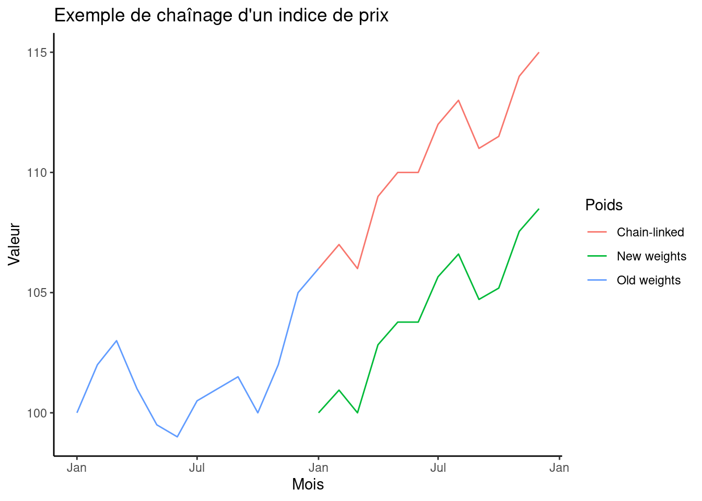

Chaînage
Les pondérations d’un indice donnent idéalement une mesure de l’importance économique des biens qui le composent, de sorte que les prix apparentés pour les biens et services de plus grande importance économique ont une plus grande influence sur l’évolution globale des prix entre les périodes. Dans l’application, les poids sont souvent réutilisés au fil du temps, car il est coûteux et long de mettre à jour en permanence les poids. Le maintien des mêmes poids période après période, cependant, signifie que les poids finiront par devenir obsolètes et pourraient ne pas saisir les changements dans l’importance économique de certains biens. Le chaînage d’un index permet de mettre à jour les pondérations d’un index et d’ajouter de nouvelles valeurs d’index aux séries d’index calculées avec les anciennes pondérations, sans avoir à réviser les anciennes séries d’index. Le chaînage peut également être utilisé pour modifier la composition des biens et services couverts par un indice des prix, et cela peut changer à mesure que de nouveaux biens sont introduits sur un marché et que des biens anciens disparaissent.
L’idée derrière le chaînage est la même que celle de la factorisation d’un index — divisez un index en deux morceaux qui peuvent être collés ensemble à une période de chevauchement commune. La différence est que, bien que la factorisation d’un indice est simplement une astuce d’algèbre, le chaînage d’un index est une solution pratique pour produire un index avec une série chronologique plus longue, plutôt que de redémarrer l’index dans la période où les pondérations changent. Dans les deux cas, l’idée est de modifier la valeur de la période de base d’un indice pour refléter la variation cumulative des prix jusqu’à ce moment-là.
Les étapes de chaînage de tout type d’index sont les mêmes, alors considérez un index arithmétique allant de la période 0 à la période \(t\), et supposez que les pondérations de cet indice changent au cours d’une période \(k\). Cela pourrait être dû au fait que les pondérations précédentes sont devenues suffisamment obsolètes pour être modifiées, ou que les biens et services auxquels l’indice s’applique ont changé. Quelle que soit la raison, cela donne lieu à deux indices, l’un allant de la période 0 à la période \(k\), utilisant des pondérations de la période 0
\[\begin{align*} I^{A}(0, k) = \sum_{i = 1}^{n} \omega_{i0} \frac{p_{ik}}{p_{i0}}, \end{align*}\]
et un autre allant de la période \(k\) à la période \(t\) en utilisant les pondérations period-\(k\)
\[\begin{align*} I^{A}(k, t) = \sum_{i = 1}^{m} \omega_{ik} \frac{p_{it}}{p_{ik}}. \end{align*}\]
L’indice chaîné multiplie simplement ces deux indices ensemble, de sorte que
\[\begin{align*} I^{A}(0, t) = \sum_{i = 1}^{n} \omega_{i0} \frac{p_{ik}}{p_{i0}} \times \sum_{i = 1}^{m} \omega_{ik} \frac{p_{it}}{p_{ik}}. \end{align*}\]
Le graphique ci-dessous donne un exemple de ce à quoi ressemble un indice chaîné.

La partie importante d’un indice chaîné est la période de chevauchement \(k\) lorsque les pondérations changent et les prix de la période \(k\) sont utilisés avec deux ensembles de pondérations. S’il n’y a pas de période de chevauchement, alors l’index ne peut pas être enchaîné. Chaque indice peut être considéré comme un maillon de la chaîne, donnant le mouvement des prix pour cette partie du temps, et la période de chevauchement est l’endroit où les maillons se rencontrent.